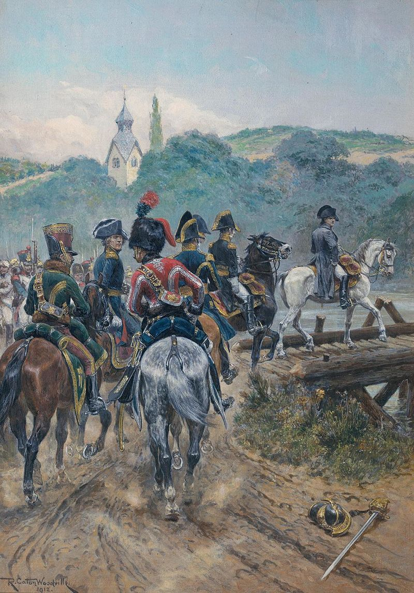

바그람 전투 (3편) - 도강
게시: 2017-06-18T23:41:30+09:00
프랑스 병사들이 나폴레옹 섬(L'ile de Napoleon)이라고 별명을 붙인 로바우 섬에서의 준비는 6월 말 다리가 준비되면서 사실상 완료되었습니다. 회전 부교(pivoting bridge), 즉 작전이 시작되면 로바우 섬의 강변에 고정된 한쪽 끝을 축으로 회전하여 도나우 강 좌안에 붙게 되어 있던 다리는 나폴레옹의 공병단장 베르트랑이 심혈을 기울여 만든 것으로서, 약 800m에 달하는 긴 다리가 놀랍게도 하나의 통판(single span)으로 만들어진 걸작이었습니다. 나폴레옹은 작센 왕에게 이 회전 부교가 엘베 강변의 작센 도시 '비텐베르크(Wittenberg)의 다리보다 더 넓고 아름다운 다리'라며 자랑을 하기도 했습니다. 이렇게 준비가 끝났는데 시간을 더 끌 나폴레옹이 아니었지요. 그는 7월 5일을 도강 날짜로 잡고, 7월 3일 쇤브룬 궁을 떠나 로바우 섬으로 향했고, 보급과 숙영 등의 문제로 인해 주변에 분산 배치했던 각 군단들에게도 이 날짜에 맞춰 로바우 섬 맞은 편인 카이저-에버스도르프(Kaiser-Ebersdorf)로 집결하도록 했습니다.

(나폴레옹이 로바우 섬으로 건너가는 장면입니다.)
로바우 섬으로부터 프랑스군이 도강을 하리라는 것은 오스트리아군에게도 명약관화한 일이었으나, 문제는 로바우 섬이 꽤 컸다는 점이었습니다. 그 넓은 강변 중 어느 쪽을 통해 강을 건널지는 아무도 모르는 일이었습니다. 실은 그 때문에 카알 대공이 구축한 방어 진지도 로바우 섬의 북안 쪽에만 펼쳐진, 상당히 허술한 것이었습니다. 어차피 그 넓은 강변을 다 지킬 수 없었으니까요. 이때 즈음해서는 카알 대공은 마르히펠트에서 싸우겠다는 생각을 버리고 이미 루스바흐 고원 지대로 물러난 뒤였습니다. 그러나 그 넓은 평원을 텅텅 비워두고 가는 것은 부적절하다고 봤는지, 클레나우(Johann von Klenau)의 제6 군단과 노르드만(Armand von Nordmann) 장군의 전위대의 2개 부대를 남겨 두었습니다. 이 조치는 그다지 좋은 판단은 아니었습니다. 이제 곧 들이닥칠 나폴레옹의 공세를 막거나 시간을 끌기에는 너무 작은 병력이었고, 나폴레옹군의 병력 이동을 감시 및 보고하기 위한 정찰 병력으로는 너무 많은 병력이었던 것입니다. 좀더 규모가 큰 클레나우의 제6 군단은 아스페른-에슬링 지역에 전개했고, 더 작은 규모였던 전위대는 에슬링 동쪽에 위치하고 있었습니다. 오스트리아 측의 예측으로는, 아무래도 나폴레옹이 지난번과 동일하게 로바우 섬의 북안을 통해 넘어올 것이라고 판단했던 것입니다.
나폴레옹은 당연히 오스트리아군의 예측을 정반대로 활용하려고 했습니다. 그는 7월 2일 르그랑(Legrand) 장군의 지휘 하에 소규모의 부대를 로바우 섬 바로 북쪽의 도나우 강 좌안에 상륙시켜 오스트리아군을 긴장시켰습니다만, 실제로는 오스트리아군의 방어 진지가 없던 로바우 섬 동쪽을 통해 도나우 강을 건널 생각이었습니다. 프랑스군은 7월 4일 밤 10시, 보트를 이용해 로바우 섬 동쪽을 마주한 도나우 강 좌안의 돌출부인 한젤-그룬트(Hansel-Grund)를 점령하고 준비한 부교 3개를 연결하기 시작했습니다. 더 북쪽으로도 마세나 휘하의 병력이 보트를 이용해 강을 건넌 뒤, 재빨리 5분만에 회전 부교를 놓고 병력을 이동시키기 시작했습니다. 때마침 내려준 폭우로 인해 오스트리아군은 이런 프랑스군의 움직임을 포착하지 못했고, 한젤-그룬트를 점령했던 프랑스군은 새벽 2시 경 부교를 완성하고 제2, 제3 군단을 도강시키기 시작했습니다. 7월 5일 오후에 이 부교를 건넜던, 외젠의 이탈리아군 소속 프랑스군 포병 대위인 노엘(Jean-Nicolas-Auguste Noel)에 따르면 이 다리 위로 대포가 지나갈 때 그 무게에 짓눌려 다리의 판자가 무려 50cm나 가라앉았다고 하니, 여전히 부교는 불안했고 또 따라서 대군이 그 많은 장비 및 보급품과 함께 강을 건너는데는 시간이 상당히 많이 걸렸을 것입니다. 나폴레옹은 추가적인 부교도 몇 개를 동시에 놓도록 하여, 7월 5일 아침 7시 경에는 이미 마세나(André Masséna)의 제4군단과 다부(Louis-Nicolas Davout)의 제3 군단은 이미 도강을 완료한 상태였고, 우디노(Nicolas-Charles Oudinot)의 제2 군단이 다리를 한창 건너고 있었습니다.
오스트리아군이 아무리 눈치가 없다고 해도, 정상적인 상황이라면 이들의 도강을 밤 사이에 몰랐을 리가 없습니다. 그런데 몰랐습니다. 오스트리아군은 거기에 대해서 변명거리가 있었습니다. 폭우가 쏟아지는 바람에 달도 없는 칠흑 같은 어둠 속에서, 눈으로도 귀로도 이 대부대의 이동을 포착할 방법이 없었던 것입니다. 거기에다 로바우 섬 일대에 설치된 프랑스군의 포대가 아스페른과 에슬링 방향으로 빗발 같은 사격을 퍼붓고 있었습니다. 따라서 오스트리아군은 프랑스군이 곧 로바우 섬 북쪽 강변으로 건너올 모양이라고 잔뜩 긴장하고 있었으나, 이미 로바우 섬 동쪽으로 프랑스군이 개미떼처럼 넘어 온 상황이라는 것을 해가 뜨기 전에는 몰랐습니다.
우디노의 제2 군단이 강변에서 정비를 마칠 때 즈음에는 비가 그치고 상쾌한 태양이 떠올라 병사들의 군복을 말려주기 시작했고, 우디노는 진격을 시작했습니다. 이들을 가로막고 선 오스트리아군은 재수없게 이 쪽을 맡고 있던 노르드만(Armand von Nordmann) 장군의 전위대 뿐이었습니다. 워낙 수적으로 열세였던 노르드만은 별다른 저항을 하지 못하고 북쪽으로 후퇴해야 했는데, 작센강(Sachsengang) 성과 그로스-엔저스도르프(Gross-Enzersdorf) 마을에 배치해 두었던 수비대는 그냥 내버려 둔 채 후퇴했습니다. 조금이라도 프랑스군의 진격을 지체시키는 임무를 준 것이지요. 그러나 이들도 그다지 오래 버티지는 못했습니다. 지난번 아스페른-에슬링 전투에서 그 바로 동쪽에 있던 그로스-엔저스도르프 마을의 중요성을 잘 이해하고 있던 나폴레옹이 직접 현장에 도착해 오스트리아군 2개 대대, 즉 1천이 넘는 병력이 방어 태세를 갖추고 있던 이 마을을 둘러 본 뒤, 로바우 섬에 설치된 22문의 대포와 14문의 박격포, 10문의 곡사포에게 이 마을에 대한 폭격을 지시한 것입니다. 이 막강한 화력의 포병대가 약 1천발의 포탄과 폭발탄을 퍼붓자 이 마을은 화재에 휩싸였고, 이들은 400명의 포로를 내고 항복해야 했습니다. 나폴레옹이 지난 1달간 로바우 섬을 중무장 요새로 변모시킨 보람이 드러나는 순간이었습니다. 클레나우 장군의 오스트리아군 제6 군단은 그로스-엔저스도르프 수비대를 지원하려 했으나 마세나의 제4 군단 소속 기병대에게 저지당했고, 결국 그들도 미리 정해진 제2 수비선인 북서쪽으로 후퇴해야 했습니다. 오전 10시 경, 프랑스군은 상륙 지점과 그 인근 마을들을 완전히 장악했고, 도강 자체는 완벽한 성공으로 끝났습니다.
지난 아스페른-에슬링 전투의 패인이었던 어설픈 도강을 이번에는 완벽하게 성공적으로 끝낸 나폴레옹이 스스로 뿌듯해 하는 동안, 프랑스군에게 밀려 북쪽과 북서쪽으로 각각 후퇴하던 노르드만과 클레나우의 오스트리아군은 입이 바싹 타들어가고 있었습니다. 작센강 성과 그로스-엔저스도르프의 수비대를 도마뱀 꼬리처럼 잘라내고 후퇴했음에도 불구하고, 대부분 보병이었던 이들은 프랑스군의 추격에서 충분히 빨리 후퇴할 수가 없었던 것입니다. 프랑스군의 기병대가 바람처럼 달려와 이들을 위협했고, 이들은 어쩔 수 없이 기병대에 맞설 유일한 방법은 보병 방진을 구성해야 했습니다. 이 상태로 후퇴하자니 후퇴는 더욱 느려질 수 밖에 없었고, 그러는 사이 프랑스군의 보병과 포병이 이들을 따라잡기 시작했습니다. 밀집 대형의 보병 방진 앞에 적 포병이 나타나면 그건 정말 끝장이었습니다. 애초에 카알 대공이 마르히펠트 평원을 포기하고 루스바흐 고원에 방어선을 친 주된 이유가 프랑스군의 강력한 기병대 때문이었습니다. 그런데 1.5개 군단, 약 2만5천의 보병을 그 넓은 마르히펠트에 경계 병력으로 남겨둔 것은 결국 과히 좋은 판단은 아니었던 것이지요. 경계 병력을 둘 것이었다면 차라리 소수의 기병대만 배치하는 것이 좋았을 것입니다.
후퇴하는 오스트리아군을 따라 잡은 프랑스 포병대에게, 노르드만 장군의 전위대는 정말 최상의 타겟이었습니다. 아군 기병대가 주변을 맴돌며 이들을 위협하여 한덩어리로 잘 뭉쳐주고 있었으며, 혹시 적 보병들이 포병들을 향해 돌격해 올 위협에 대해서는 바로 옆에는 아군 보병들이 든든하게 지켜주고 있었으니까요. 이들은 신나게 오스트리아군 보병 방진을 향해 포탄을 퍼부었고, 오스트리아군은 속절없이 볼링 핀처럼 뭉텅이로 쓰러져야 했습니다. 오후 1시 경이 되자 상황이 매우 심각해졌습니다. 이미 많은 보병들이 쓰러졌는데, 이젠 아예 적에게 퇴로까지 끊길 상황이었으니까요. 이 모습을 고원 지대의 방어선 뒤에 있던 카알 대공은 모두 내려다 보고 있었습니다. 무슨 일이 생겨도 루스바흐 고원의 저지선 밖으로 나가 마르히펠트 평원에서 프랑스군과 싸우는 일은 피하겠다고 작정했던 카알 대공조차도, 눈 앞에서 2만의 아군이 전멸을 당할 위기에 놓이자 결심을 바꿀 수 밖에 없었습니다. 그는 나폴레옹도 무척 존중했던 리히텐슈타인(Liechtenstein) 대공의 기병대를 파견하여 이들을 구조하려 했습니다. 그러나 이미 프랑스군이 강력한 보-기-포병의 조합을 완성한 모습을 보자, 그도 쉽사리 접근할 수가 없었습니다.
이러는 사이 프랑스군은 좌익은 마세나의 제4 군단, 중앙은 우디노의 제2 군단, 우익은 다부의 제3 군단을 제 1진으로 하여 마르히펠트에 전개하고 있었습니다. 이들에 이어 제2진으로는 좌측에 작센 병사들로 구성된 베르나도트의 제9 군단, 중앙에 마르몽의 제11 군단과 근위대, 그리고 우측에는 외젠의 이탈리아군이 전개되었고요. 제1진의 군단들이 2만명 이상의 규모로 강력했던 것에 비해 제2진의 군단들은 1만명 정도로 상당히 약한 편이었습니다. 가령 베르나도트의 작센 군단은 여기저기에 휘하 사단을 다 떼어주고 고작 1개 사단 9천명만 남아 있었습니다. 문제는 이런 제2진까지도 노르드만의 전위대를 따라 잡을 정도로 상황이 심각했다는 것이었습니다. 오후 3시가 넘자, 노르드만의 전위대는 이판사판의 정신으로 후퇴를 멈추고 프랑스군과 맞서 싸울 태세를 갖추었습니다. 이들을 도우러 프랑스 망명 귀족 출신인 두르발(Nicolas-François Roussel d'Hurbal)이 약 1천의 기병대를 거느리고 뛰어 나왔으나, 베르나도트의 작센 기병대의 요격을 받고 혼전 끝에 결국 물러났습니다. 이렇게 어려운 싸움 끝에, 결국 원래 1만2천으로 시작했던 노르드만의 전위대는 무려 절반인 6천의 전사, 부상, 포로를 내고서야 마르크그라프노이지들(Markgrafneusiedl) 마을의 방어선으로 물러날 수 있었습니다. 이들의 희생 덕분에 클레나우의 군단은 비교적 적은 피해만을 입고 카알 대공의 방어선 중 서쪽 측면인 바그람-게라스도르프(Wagram-Gerasdorf) 전선으로 물러날 수 있었습니다.
이렇게, 전투의 시작은 오스트리아군에게 무척이나 좋지 않은 모습으로 시작되었습니다. 그러나, 여기서부터 카알 대공의 원대한 계획이 위력을 발휘하기 시작합니다.
Source : The Reign of Napoleon Bonaparte by Robert Asprey
With Napoleon's Guns by Jean-Nicolas-Auguste Noel
http://www.historyofwar.org/articles/battles_wagram.html
https://en.wikipedia.org/wiki/Battle_of_Wagram